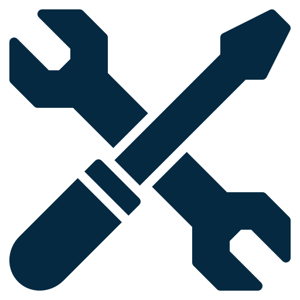

FRONTEND DEVELOPER
Welcome to my workspace: where I build front-end interfaces focused on logic and interaction.
I care about behavior, structure, and how things actually work.
Projects
About
Viviana Henriques - notepad
File
Edit
Format
View
Help
Programming has always felt natural to me.
I tend to think in logic and structure instinctively, often visualising solutions and code flow before writing anything down. This allows me to quickly understand unfamiliar codebases, reason about intent, and adapt to different styles, even when they're unconventional or incomplete.
This way of thinking has also shaped how I explain concepts to others, helping me break down complex ideas and understand different problem-solving approaches.
I tend to think in logic and structure instinctively, often visualising solutions and code flow before writing anything down. This allows me to quickly understand unfamiliar codebases, reason about intent, and adapt to different styles, even when they're unconventional or incomplete.
This way of thinking has also shaped how I explain concepts to others, helping me break down complex ideas and understand different problem-solving approaches.